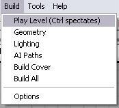
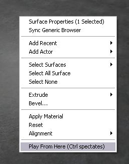

UDN
Search public documentation:
PlayInEditorUserGuideKR
English Translation
日本語訳
中国翻译
Interested in the Unreal Engine?
Visit the Unreal Technology site.
Looking for jobs and company info?
Check out the Epic games site.
Questions about support via UDN?
Contact the UDN Staff
日本語訳
中国翻译
Interested in the Unreal Engine?
Visit the Unreal Technology site.
Looking for jobs and company info?
Check out the Epic games site.
Questions about support via UDN?
Contact the UDN Staff
에디터내 게임플레이 기능
문서 요약: 에디터내에서의 게임플레이 기능 (에디터에서 "Play Level" 및 "Play From Here" 로 표시) 사용법을 설명합니다 . 문서 변경 내역: 작성 Josh Adams.개요
UE3 에는 에디터를 떠나지 않고도 게임을 미리보기 할 수 있는 새 기능이 추가되어 있습니다. 여기에는 두 가지 방법이 있습니다.- "Build | Play Level 을 선택"

- 뷰포트를 오른 클릭해서 "Play From Here"를 선택

Play Level
"Play Level" 은 게임을 맵을 적재해서 실행하는 것처럼 정상적으로 시작합니다. 따라서 PlayerStart 액터에서 (또는 지정된 시작방법에 따라) 게임이 시작됩니다.Play From Here
"Play From Here" 는 게임을 시작하지만, 화면에서 오른 클릭한 장소로 텔레포트됩니다. 이는 맵의 어느 특정 부분에 대한 테스트를 훨씬 빠르게 합니다. 앞으로 아주 큰 맵을 테스트해야 하는 경우에는 정말 많은 시간을 절약할 수 있습니다!게임플레이 옵션 변경
에디터내 게임을 어떤 방법으로 시작했든, Ctrl 키를 계속 누르고 있으면 게임은 관객 모드로 시작됩니다 (게임이 관객 모드를 가지고 있다는 것을 전제로). 게임에 전달된 URL 옵션들을 변경할 필요가 있을 경우에는 Engine .ini 파일에 옵션을 추가하면 됩니다. "Editor.EditorEngine" 섹션에서 "InEditorGameURLOptions" 속성을 설정합니다. 예를 들면:[Editor.EditorEngine] InEditorGameURLOptions=?SuperDuperMode=1
주석
PIE에서 노트를 남기는 새 기능은 2007년 4월 QA-승인 빌드에서 추가되었습니다. 노트를 남기려면 아래 구문을 입력하면 됩니다:=dn this is mynote text=